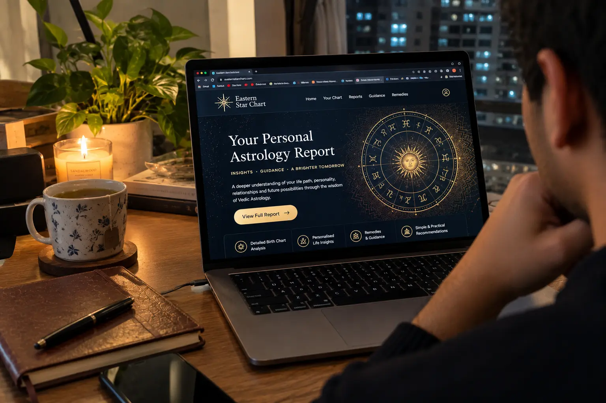
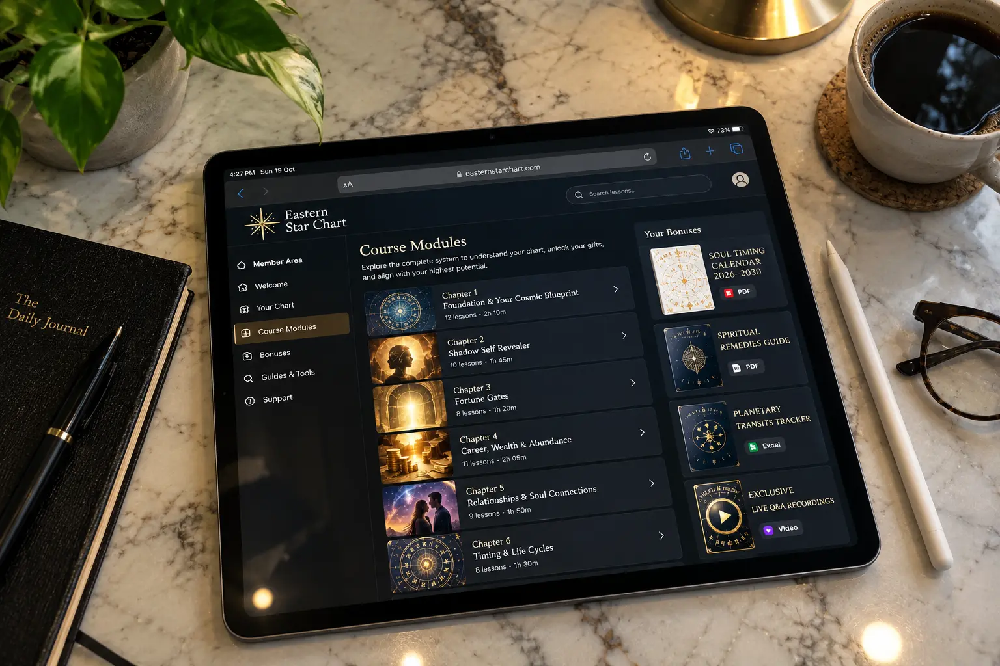

Eastern Star Chart Review (2026): An Automated AI Script Or A Real Vedic Reading?

Let’s be completely transparent about the digital astrology industry.
Currently, the internet is flooded with "free readings" that quickly turn into expensive upsells. When researching the Eastern Star Chart, we noticed a massive marketing campaign highlighting how your Western zodiac sign is wrong, and that discovering your "Sidereal" (Vedic) sign is the key to unlocking hidden fortunes.
But when you hand over your email and $47, what are you actually paying for? Is an old monk typing this out by hand, or is it a copy-pasted AI template?
We bypassed the promotional hype to conduct an unfiltered audit of the Eastern Star Chart. We broke down the difference between a date-of-birth reading versus a full natal chart, analyzed the 8 specific chapters you receive, and read the fine print on their 365-day money-back guarantee.
📌 TL;DR: The Forensic Verdict
Is the Eastern Star Chart a scam? No, provided you understand what you are buying. It is not a handcrafted 12-house natal chart (which requires your exact birth time and city). Instead, it is a sophisticated digital report generated based on your Sidereal Sun Sign using Vedic astrology principles. The $47 package genuinely delivers 8 in-depth chapters covering life purpose, relationships, and financial traits, plus 4 digital bonuses. The strongest selling point is that it is backed by a verified 365-day money-back guarantee processed by ClickBank, meaning you can test the insights entirely risk-free.
1. ⚠️ Alert: The AI Template Myth vs. Sidereal Reality
The biggest fear buyers have with digital astrology is paying $47 for a generic PDF that applies to millions of other people.
The Truth About Delivery
Let's be clear: this report is not written individually from scratch by an astrologer sitting at a desk. It is a highly programmed digital algorithm. However, that does not make it "fake." The software uses legitimate Vedic (Sidereal) planetary alignment data based on your specific birth date to compile a personalized interpretation.
It calculates a different zodiac placement than standard Western astrology (which uses the Tropical system). If you are looking for a totally new perspective on your personality that standard horoscopes miss, this algorithm delivers accurately on Sidereal principles.
2. What A "Date of Birth Only" Reading Can Actually Tell You
The sales funnel for the Eastern Star Chart only asks for your first name, email address, and Date of Birth. It does not ask for your exact time of birth or city of birth.
In traditional astrology, you need the exact time and location to map your Ascendant (Rising Sign) and the specific 12 astrological houses. Because this report only uses your birth date, it focuses primarily on your Sidereal Sun Sign and major planetary influences of that specific day.
What this means for you: The report will be incredibly accurate regarding your overarching life themes, deep personality traits, and career inclinations. It will not, however, predict the exact hour you will meet your soulmate. It is a guide to your nature, not a crystal ball.
3. Digital Content Audit: What You Get for $47
We audited the actual contents of the delivered digital package. The sales page claims a "value" of over $900. While seller-assigned values are just marketing tactics, the actual volume of content delivered for $47 is substantial.

📁 Verified Digital Delivery Contents
Here is exactly what is included in your digital member area upon purchase:
| Content Asset | Description / Purpose | Status |
|---|---|---|
| The Shadow Self Revealer | Chapter detailing hidden personality traits and internal obstacles. | Included in Main Report |
| The Fortune Gates | Analysis of periods associated with career opportunity and wealth creation. | Included in Main Report |
| Soulmate Signature | Relationship-focused interpretation mapping compatibility traits. | Included in Main Report |
| True Life Purpose | Career and personal-direction guidance based on Vedic placements. | Included in Main Report |
| Bonus 1: Inner Eye Awakener | A supplementary guide focused on intuition and spiritual awareness. | Digital Bonus (Free) |
| Bonus 2: Destiny Mantra | Personalized mantras aligned with your Sidereal sign. | Digital Bonus (Free) |
| Bonus 3: Three Fortune Rituals | A short guide on daily habits intended to attract abundance. | Digital Bonus (Free) |
| Bonus 4: Ninth Destiny Gate | Advanced Vedic concepts regarding long-term life achievements. | Digital Bonus (Free) |
Note: All files are delivered digitally (PDF format) via email within 24 hours of purchase. No physical books are mailed to your address.
4. Pricing, Delivery & The 365-Day Guarantee
The standard price for the complete package is a one-time fee of $47.00. Because it is a digital product, there are no recurring subscriptions and no shipping fees.
The Retailer Safety Net: The transaction is handled entirely by ClickBank, one of the world's most secure digital retailers. This is critical because ClickBank strictly enforces the vendor's refund policy.
The 365-Day Guarantee: The Eastern Star Chart comes with an incredible 365-day (1 full year) money-back guarantee. If you read through your personalized chapters and feel that the insights do not resonate with your life or personality, you can simply email support within 365 days for a full refund. Furthermore, you are allowed to keep all the downloaded digital files even if you request your money back.
Get Your Personalized Reading & 365-Day Guarantee Below:
Generate Your Eastern Star Chart Now >>5. Financial Verdict: Is It Worth The Money?
If you are a professional astrologer looking for a micro-detailed 12-house natal chart calculating to the exact minute of your birth, this product is not for you. You need to hire a live astrologer for hundreds of dollars.
🛡️ Our Purchasing Recommendation
However, if you are simply looking for deep, alternative insights into your personality, career, and relationships that your standard Western horoscope keeps getting wrong, the $47 Eastern Star Chart is a fantastic starting point.
The 8 chapters are well-written, easy to understand, and provide a fascinating look at Vedic (Sidereal) astrology. Because it is backed by ClickBank's ironclad 365-day refund policy, the financial risk is entirely on the seller. You can read the whole thing, and if it doesn't blow your mind, just ask for a refund.
Secure Your Reading Risk-Free Here >>